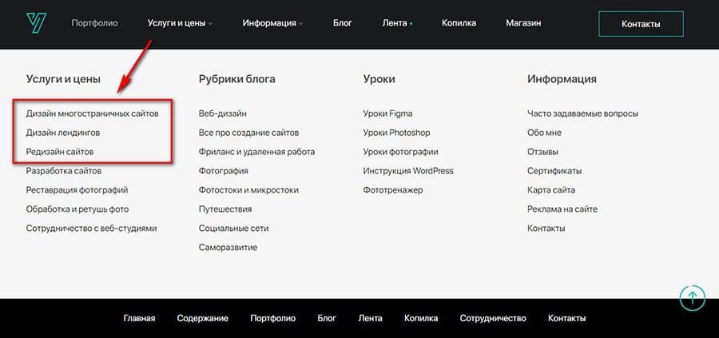
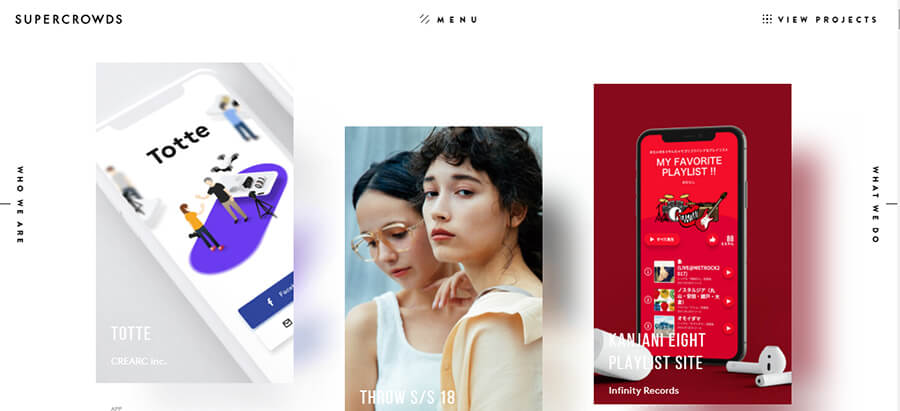

Дизайнер обязательно должен иметь портфолио с примерами работ. Это идеальный способ показать заказчикам уровень вашего мастерства. Дизайн — не та сфера, где достаточно продемонстрировать резюме, рассказать на словах о своем опыте и получить при этом выгодный заказ.
В статье расскажем, как дизайнеру создать портфолио, что в нем указывать, как его оформить и в чем. Разберём множество наглядных примеров представления работ.
Читайте также: 10 курсов по веб-дизайну
Ваши работы — это уже 90% успеха портфолио. Но их нужно оформить и правильно презентовать себя. Если графический, веб или UX/UI-дизайнер не может создать качественное визуально привлекательное портфолио — это повод усомниться в его способностях.
Если у вас еще нет портфолио, возможно вам кажется, что это дело 5 минут — у меня столько работ, сяду сегодня вечерком и забабахаю себе такое портфолио! Но нужно подойти серьезно к процессу: собрать свои работы, отобрать из них лучшие (а не выкладывать все подряд), подготовить к размещению, оформить.
Сбор:
*Если у вас еще нет клиентов или их мало, можно пройти курсы по дизайну — в процессе обучения у вас будет несколько готовых работ для портфолио. Также можно создать работы специально для портфолио — тогда не придется спрашивать разрешение у заказчика. Но наличие хотя бы нескольких реальных кейсов с отзывами будет плюсом (которые можно показать, например, добавив ссылку на сайт заказчика).
Подготовка:
Это интересно: Этапы разработки айдентики
Можно выбрать один вариант или совместить, если хотите получать больше заказов. Правда учитывайте, что можно не справиться с потоком заданий от нескольких заказчиков.
На своем сайте. Это самый удобный вариант, так как вы не ограничены возможностями чужих площадок. Если умеете создавать и оформлять сайты, то результат зависит от вашей фантазии и навыков.
Если не умеете делать сайты с нуля, например, на Вордпресс, то можно создать красивый лендинг с портфолио наконструкторе сайтов.
В сервисах для размещения портфолио. Вместо сайта можно использовать сервисы для создания портфолио: Portfeel и Portfoliobox.
На онлайн-площадках. Must-have площадки для размещения дизайнерского портфолио это Behance и Dribbble. Даже если у вас есть личный сайт, на них все равно стоит разместить свои работы. Особенно, если планируете работать с зарубежными заказчиками. Это не только площадки для демонстрации работ, но и для поиска клиентов.
В соцсетях. Презентовать себя и найти заказчиков можно и через соцсети. Для дизайнеров (особенно графических) две идеальных площадки — это Instagram и Pinterest. Есть еще малоизвестный аналог Пинтереста —Savee.it. Его можно использовать для демонстрации работ потенциальным заказчикам.
1. Блок «О вас». Ваше имя, фото (по желанию), направление дизайна, информация о вас (опыт, достижения, образование).
С сайта дизайнера Яны Ходкиной:
2. Примеры работ. В зависимости от направления дизайна это могут быть картинки или видео. Если занимаетесь веб-дизайном, дополнительно стоит указать ссылки на проекты, над которыми работали.
Совет: размещайте примеры в высоком разрешении, чтобы заказчик мог рассмотреть детали. Для вдохновения поищите работы известных дизайнеров и креативных агентств.
3. Ваше направление дизайна. Помимо глобального направления (графический дизайн, веб-дизайн, дизайн интерьеров, UX-дизайн и так далее) стоит указать, чем конкретно вы занимаетесь. Например, в том же графическом дизайне можно создавать дизайн упаковки, оформлять баннеры и обложки для соцсетей, отрисовывать постеры, делать рекламные креативы.
4. Прайс. Распишите цены за конкретную услугу либо за час работы, если у вас почасовая ставка.
5. Контакты. Напишите, как с вами можно связаться и в какое время.
6. Бриф. Можно сразу создать анкету для потенциальных заказчиков, где они смогут описать, что конкретно требуется сделать. Это сэкономит время вам и заказчику в будущем.
Есть несколько способов оформления:
— если работ немного, можно выложить их все подряд, например, в виде плитки. Под работой можно указать название или краткое описание (или чтобы высвечивалось при наведении на нее).
— если работ много, и они разного направления, лучше рассортировать по разделам. На примере сайта Яны Ходкиной — можно посмотреть все работы или нажать на конкретный раздел в верхней панели меню.
Если нажать на картинку с разделом, например на логотипы, то открывается отдельная страница с этими логотипами. Оформлены в виде галереи-слайдера + список.
*В начале каждого раздела добавьте краткое описание.
— креативный способ оформления. Зависит от вашей фантазии и навыков веб-дизайна. Можно выбрать нестандартный шаблон для портфолио или придумать свою уникальную фишку и реализовать с помощью веб-дизайнера. Примеры креативного оформления в разделе ниже — обратите внимание на портфолио BuzzWorthyStudio, ToyFight, Shantell Martin.
В отличие от других специальностей, где допустимо простое оформление портфолио или даже его отсутствие, дизайнер должен все делать максимально качественно.
Примеры красивого оформления дизайнерского портфолио (на личном сайте или сайте студии):
#1. Liz Grant.
#2. BuzzWorthyStudio. Это сайт студии графического дизайна, но тут есть интересная задумка, которую вы можете реализовать в своем портфолио. На сайте список полупрозрачных слов — это названия проектов (крупным шрифтом). Если навести мышку на название, оно становится ярко белым, а на заднем плане появляется сама работа.
#3. ToyFight. Это тоже студия. Фишка оформления — когда нажимаешь на название проекта, то можно не только посмотреть все работы, связанные с ним, но и подробную историю. Про бренд, как создавалась концепция дизайна, какая идея заложена в него. Смотрится очень профессионально и дорого.
#4. Shantell Martin. Дизайнер с креативным подходом. Здесь интересно то, что у специалиста есть свой уникальный стиль, как в работах, так и в оформлении сайта-портфолио. Страница с работами оформлена с бесконечной прокруткой — справа картинка не двигается, а слева работы появляются по мере скроллинга.
Если нажать на конкретную работу, открывается отдельная страница. На ней название, краткое описание проекта и фотографии, как создавался дизайн.
Фото в процессе работы над дизайном:
@interfacely — UX и web-дизайнеры.
@robertgabrielb. Тут интересно посмотреть, как дизайнер визуализировал свою фишку — использование каллиграфии в графическом дизайне и фотографии.
@beandbear_graphicdesign — дизайнер логотипов. У него пока мало подписчиков, но можно посмотреть идею — использование мокапов для более презентабельной визуализации своих работ.
*Не забудьте указать информацию о себе в разделе «Описание» или «Биография». Также можно указать контакты и прикрепить ссылку на прайс.
В виде презентации. Для отправки в электронном виде потенциальным заказчикам. Для оформления можно использовать PowerPoint, Keynote (если у вас Макбук), Google Slides.
Печатный вариант. Если бываете на живых встречах и мероприятиях, связанных с дизайном, можно дополнительно распечатать портфолио и показывать его потенциальным клиентам.
Портфолио дизайнера — это визитная карточка, которая скажет о нем гораздо больше, чем резюме. Вы можете быть новичком, но талантливым и создавать уникальные дизайны, непохожие на другие. И тогда заказчикам будет все равно, какой у вас опыт и образование.
Невозможно понять, что дизайнер — специалист, не взглянув на его работы. Советуем создать портфолио и со временем его обновлять — по мере появления новых достойных кейсов. Если сможете придумать свою уникальную фишку и отразите это в портфолио — будете на два шага впереди конкурентов.